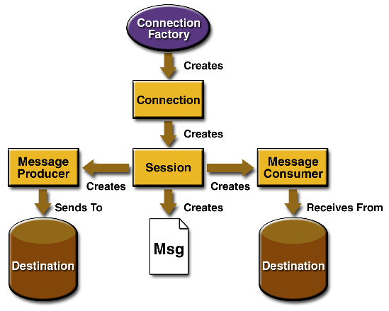

3 The JMS API Programming Model
The basic building blocks of a JMS application consist of
- Administered objects: connection factories and destinations Connections
- Sessions
- Message producers
- Message consumers
- Messages
Figure 3.1 shows how all these objects fit together in a JMS client application.
Figure 3.1 The JMS API Programming Model
This chapter describes all these objects briefly and provides sample commands and code snippets that show how to create and use the objects. The last section briefly describes JMS API exception handling.
Examples that show how to combine all these
objects in applications appear in later chapters. For more details, see the
JMS API documentation, which you can download from the JMS Web site, http://java.sun.com/products/jms/.
3.1 Administered Objects
Two parts of a JMS application--destinations and connection factories--are best maintained administratively rather than programmatically. The technology underlying these objects is likely to be very different from one implementation of the JMS API to another. Therefore, the management of these objects belongs with other administrative tasks that vary from provider to provider.
JMS clients access these objects through interfaces that are portable, so a client application can run with little or no change on more than one implementation of the JMS API. Ordinarily, an administrator configures administered objects in a JavaTM Naming and Directory InterfaceTM (JNDI) API namespace, and JMS clients then look them up, using the JNDI API. J2EETM applications always use the JNDI API.
With the J2EE Software Development Kit (SDK)
version 1.3.1, you use a tool called j2eeadmin to perform administrative
tasks. For help on the tool, type j2eeadmin with no arguments.
3.1.1 Connection Factories
A connection factory is the object
a client uses to create a connection with a provider. A connection factory
encapsulates a set of connection configuration parameters that has been defined
by an administrator. A pair of connection factories come preconfigured with
the J2EE SDK and are accessible as soon as you start the service. Each connection
factory is an instance of either the QueueConnectionFactory or
the TopicConnectionFactory interface.
With the J2EE SDK, for example, you can use
the default connection factory objects, named QueueConnectionFactory
and TopicConnectionFactory, to create connections. You can also
create new connection factories by using the following commands:
j2eeadmin -addJmsFactory jndi_name queue j2eeadmin -addJmsFactory jndi_name topic
At the beginning of a JMS client program,
you usually perform a JNDI API lookup of the connection factory. For example,
the following code fragment obtains an InitialContext object
and uses it to look up the QueueConnectionFactory and the TopicConnectionFactory
by name:
Context ctx = new InitialContext();
QueueConnectionFactory queueConnectionFactory =
(QueueConnectionFactory) ctx.lookup("QueueConnectionFactory");
TopicConnectionFactory topicConnectionFactory =
(TopicConnectionFactory) ctx.lookup("TopicConnectionFactory");
Calling the InitialContext method
with no parameters results in a search of the current classpath for a vendor-specific
file named jndi.properties. This file indicates which JNDI API
implementation to use and which namespace to use.
3.1.2 Destinations
A destination is the object a client uses to specify the target of messages it produces and the source of messages it consumes. In the PTP messaging domain, destinations are called queues, and you use the following J2EE SDK command to create them:
j2eeadmin -addJmsDestination queue_name queue
In the pub/sub messaging domain, destinations are called topics, and you use the following J2EE SDK command to create them:
j2eeadmin -addJmsDestination topic_name topic
A JMS application may use multiple queues and/or topics.
In addition to looking up a connection factory,
you usually look up a destination. For example, the following line of code
performs a JNDI API lookup of the previously created topic MyTopic
and assigns it to a Topic object:
Topic myTopic = (Topic) ctx.lookup("MyTopic");
The following line of code looks up a queue
named MyQueue and assigns it to a Queue object:
Queue myQueue = (Queue) ctx.lookup("MyQueue");
3.2 Connections
A connection encapsulates a virtual connection with a JMS provider. A connection could represent an open TCP/IP socket between a client and a provider service daemon. You use a connection to create one or more sessions.
Like connection factories, connections come
in two forms, implementing either the QueueConnection or the
TopicConnection interface. For example, once you have a QueueConnectionFactory
or a TopicConnectionFactory object, you can use it to create
a connection:
QueueConnection queueConnection = queueConnectionFactory.createQueueConnection(); TopicConnection topicConnection = topicConnectionFactory.createTopicConnection();
When an application completes, you need to close any connections that you have created. Failure to close a connection can cause resources not to be released by the JMS provider. Closing a connection also closes its sessions and their message producers and message consumers.
queueConnection.close(); topicConnection.close();
Before your application can consume messages,
you must call the connection's start method; for details, see
Section 3.5, "Message Consumers." If
you want to stop message delivery temporarily without closing the connection,
you call the stop method.
3.3 Sessions
A session is a single-threaded context for producing and consuming messages. You use sessions to create message producers, message consumers, and messages. Sessions serialize the execution of message listeners; for details, see Section 3.5.1, "Message Listeners."
A session provides a transactional context with which to group a set of sends and receives into an atomic unit of work. For details, see Section 5.2.2, "Using JMS API Local Transactions."
Sessions, like connections, come in two forms,
implementing either the QueueSession or the TopicSession
interface. For example, if you created a TopicConnection object,
you use it to create a TopicSession:
TopicSession topicSession = topicConnection.createTopicSession(false, Session.AUTO_ACKNOWLEDGE);
The first argument means that the session is not transacted; the second means that the session automatically acknowledges messages when they have been received successfully. (For more information, see Section 5.1.1, "Controlling Message Acknowledgment.")
Similarly, you use a QueueConnection
object to create a QueueSession:
QueueSession queueSession = queueConnection.createQueueSession(true, 0);
Here, the first argument means that the session is transacted; the second indicates that message acknowledgment is not specified for transacted sessions.
3.4 Message Producers
A message producer is an object created
by a session and is used for sending messages to a destination. The PTP form
of a message producer implements the QueueSender interface. The
pub/sub form implements the TopicPublisher interface.
For example, you use a QueueSession
to create a sender for the queue myQueue, and you use a TopicSession
to create a publisher for the topic myTopic:
QueueSender queueSender = queueSession.createSender(myQueue); TopicPublisher topicPublisher = topicSession.createPublisher(myTopic);
You can create an unidentified producer by
specifying null as the argument to createSender
or createPublisher. With an unidentified producer, you can wait
to specify which destination to send the message to until you send or publish
a message.
Once you have created a message producer,
you can use it to send messages. (You have to create the messages first; see
Section 3.6, "Messages.") With a QueueSender,
you use the send method:
queueSender.send(message);
With a TopicPublisher, you use
the publish method:
topicPublisher.publish(message);
If you created an unidentified producer, use
the overloaded send or publish method that specifies
the destination as the first parameter.
3.5 Message Consumers
A message consumer is an object created by a session and is used for receiving messages sent to a destination. A message consumer allows a JMS client to register interest in a destination with a JMS provider. The JMS provider manages the delivery of messages from a destination to the registered consumers of the destination.
The PTP form of message consumer implements
the QueueReceiver interface. The pub/sub form implements the
TopicSubscriber interface.
For example, you use a QueueSession
to create a receiver for the queue myQueue, and you use a TopicSession
to create a subscriber for the topic myTopic:
QueueReceiver queueReceiver = queueSession.createReceiver(myQueue); TopicSubscriber topicSubscriber = topicSession.createSubscriber(myTopic);
You use the TopicSession.createDurableSubscriber
method to create a durable topic subscriber. For details, see Section
5.2.1, "Creating Durable Subscriptions."
Once you have created a message consumer,
it becomes active, and you can use it to receive messages. You can use the
close method for a QueueReceiver or a TopicSubscriber
to make the message consumer inactive. Message delivery does not begin until
you start the connection you created by calling the start method
(see Section 3.2, "Connections").
With either a QueueReceiver or
a TopicSubscriber, you use the receive method to
consume a message synchronously. You can use this method at any time after
you call the start method:
queueConnection.start(); Message m = queueReceiver.receive(); topicConnection.start(); Message m = topicSubscriber.receive(1000); // time out after a second
To consume a message asynchronously, you use a message listener, described in Section 3.5.1, "Message Listeners."
3.5.1 Message Listeners
A message listener is an object that
acts as an asynchronous event handler for messages. This object implements
the MessageListener interface, which contains one method, onMessage.
In the onMessage method, you define the actions to be taken when
a message arrives.
You register the message listener with a specific
QueueReceiver or TopicSubscriber by using the setMessageListener
method. For example, if you define a class named TopicListener
that implements the MessageListener interface, you can register
the message listener as follows:
TopicListener topicListener = new TopicListener(); topicSubscriber.setMessageListener(topicListener);
After you register the message listener, you
call the start method on the QueueConnection or
the TopicConnection to begin message delivery. (If you call start
before you register the message listener, you are likely to miss messages.)
Once message delivery begins, the message
consumer automatically calls the message listener's onMessage
method whenever a message is delivered. The onMessage method
takes one argument of type Message, which the method can cast
to any of the other message types (see Section
3.6.3, "Message Bodies").
A message listener is not specific to a particular
destination type. The same listener can obtain messages from either a queue
or a topic, depending on whether the listener is set by a QueueReceiver
or a TopicSubscriber object. A message listener does, however,
usually expect a specific message type and format. Moreover, if it needs to
reply to messages, a message listener must either assume a particular destination
type or obtain the destination type of the message and create a producer for
that destination type.
Your onMessage method should
handle all exceptions. It must not throw checked exceptions, and throwing
a RuntimeException, though possible, is considered a programming
error.
The session used to create the message consumer serializes the execution of all message listeners registered with the session. At any time, only one of the session's message listeners is running.
In the J2EE 1.3 platform, a message-driven bean is a special kind of message listener. For details, see Section 6.2, "Using Message-Driven Beans."
3.5.2 Message Selectors
If your messaging application needs to filter the messages it receives, you can use a JMS API message selector, which allows a message consumer to specify the messages it is interested in. Message selectors assign the work of filtering messages to the JMS provider rather than to the application. For an example of the use of a message selector, see Chapter 8.
A message selector is a String
that contains an expression. The syntax of the expression is based on a subset
of the SQL92 conditional expression syntax. The createReceiver,
createSubscriber, and createDurableSubscriber methods
each have a form that allows you to specify a message selector as an argument
when you create a message consumer.
The message consumer then receives only messages whose headers and properties match the selector. (See Section 3.6.1, "Message Headers," and Section 3.6.2, "Message Properties.") A message selector cannot select messages on the basis of the content of the message body.
3.6 Messages
The ultimate purpose of a JMS application is to produce and to consume messages that can then be used by other software applications. JMS messages have a basic format that is simple but highly flexible, allowing you to create messages that match formats used by non-JMS applications on heterogeneous platforms.
A JMS message has three parts:
- A header
- Properties (optional)
- A body (optional)
For complete documentation of message headers,
properties, and bodies, see the documentation of the Message
interface in the API documentation.
3.6.1 Message Headers
A JMS message header contains a number of
predefined fields that contain values that both clients and providers use
to identify and to route messages. (Table
3.1 lists the JMS message header fields and indicates how their values
are set.) For example, every message has a unique identifier, represented
in the header field JMSMessageID. The value of another header
field, JMSDestination, represents the queue or the topic to which
the message is sent. Other fields include a timestamp and a priority level.
Each header field has associated setter and
getter methods, which are documented in the description of the Message
interface. Some header fields are intended to be set by a client, but many
are set automatically by the send or the publish
method, which overrides any client-set values.
3.6.2 Message Properties
You can create and set properties for messages if you need values in addition to those provided by the header fields. You can use properties to provide compatibility with other messaging systems, or you can use them to create message selectors (see Section 3.5.2, "Message Selectors"). For an example of setting a property to be used as a message selector, see Section 8.1.2.3, "The Bean Class: PublisherBean.java."
The JMS API provides some predefined property names that a provider may support. The use of either predefined properties or user-defined properties is optional.
3.6.3 Message Bodies
The JMS API defines five message body formats, also called message types, which allow you to send and to receive data in many different forms and provide compatibility with existing messaging formats. Table 3.2 describes these message types.
The JMS API provides methods for creating messages
of each type and for filling in their contents. For example, to create and
send a TextMessage to a queue, you might use the following statements:
TextMessage message = queueSession.createTextMessage(); message.setText(msg_text); // msg_text is a String queueSender.send(message);
At the consuming end, a message arrives as
a generic Message object and must be cast to the appropriate
message type. You can use one or more getter methods to extract the message
contents. The following code fragment uses the getText method:
Message m = queueReceiver.receive();
if (m instanceof TextMessage) {
TextMessage message = (TextMessage) m;
System.out.println("Reading message: " + message.getText());
} else {
// Handle error
}
3.7 Exception Handling
The root class for exceptions thrown by JMS
API methods is JMSException. Catching JMSException
provides a generic way of handling all exceptions related to the JMS API.
The JMSException class includes the following subclasses, which
are described in the API documentation:
-
IllegalStateException -
InvalidClientIDException -
InvalidDestinationException -
InvalidSelectorException -
JMSSecurityException -
MessageEOFException -
MessageFormatException -
MessageNotReadableException -
MessageNotWriteableException -
ResourceAllocationException -
TransactionInProgressExceptionTransactionRolledBackException
All the examples in the tutorial catch and handle
JMSException when it is appropriate to do so.
TOC | Prev | Next | Index
This Tutorial contains information on the 1.3.1 version of the Java 2 Platform, Enterprise Edition.
Copyright © 2002 Sun Microsystems, Inc. All rights reserved.